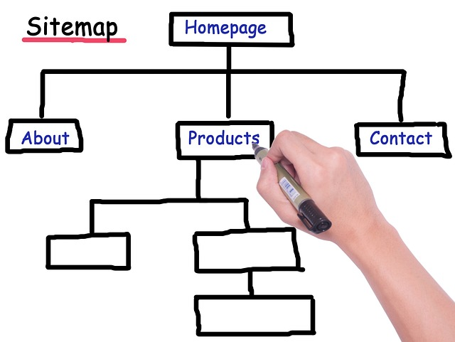

5 Dicas Essenciais para Criar o Seu Primeiro Site
Autor: João Silva | Categoria: Desenvolvimento Web

Criar o seu primeiro site pode parecer uma tarefa assustadora, mas com as ferramentas e o planejamento certos, torna-se uma experiência incrivelmente gratificante. Não importa se você está usando HTML e CSS do zero ou uma plataforma como WordPress, os princípios básicos são sempre os mesmos.
1. Planeje a estrutura antes de começar
Antes de escrever qualquer código ou escolher um tema, pegue papel e caneta. Desenhe onde ficará o cabeçalho, o menu, o conteúdo principal e o rodapé. Ter um rascunho visual (wireframe) poupa horas de trabalho.
2. Mantenha o design simples e limpo (Clean)
Menos é mais. Evite poluir a tela com excesso de cores brilhantes ou fontes diferentes. Escolha uma paleta de 2 a 3 cores que combinem entre si e use no máximo dois tipos de fontes (uma para títulos e outra para os textos longos).
3. Não se esqueça da responsividade (Mobile-First)
Hoje em dia, a maioria das pessoas acessa a internet pelo celular. Certifique-se de que o seu site se adapta a telas menores. Os botões devem ser fáceis de clicar em telas de toque e o texto deve ser legível sem a necessidade de dar zoom.
4. Crie conteúdo de valor
Um site bonito não serve de muito se o conteúdo for ruim. Escreva textos claros, diretos e que resolvam o problema ou a dúvida do seu visitante.
5. Teste tudo antes de publicar
Clique em todos os links do menu para ver se estão funcionando. Verifique se as imagens estão carregando rápido e abra o site em navegadores diferentes (Chrome, Firefox, Safari) para garantir que tudo está no lugar certo.
Conclusão:
O desenvolvimento web é uma jornada de aprendizado contínuo. Não tenha medo de errar, pois é testando e quebrando códigos que se aprende a consertá-los. Boa sorte no seu projeto!